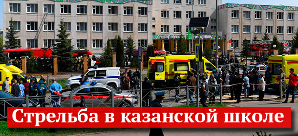

«Найти виновных»: что известно о «нулевых пациентах»
В китайском Ухане был найден «нулевой пациент» с коронавирусом, сообщает Fox News.Источники телеканала, знакомые с деталями действий правительства Китая и видевшие соответствующие документы, сообщают, что этот человек работал в лаборатории Института вирусологии, где были выявлены нарушения мер безопасности.
Согласно одной из версий, которую приводит телеканал, вирусом заразилась молодая лаборантка, которая передала инфекцию своему молодому человеку.Именно он впоследствии отправился на рынок морепродуктов, откуда и началось масштабное распространение эпидемии.
Как отмечает Fox News, деятельность указанной лаборатории была направлена на то, чтобы «продемонстрировать равенство Китая с Соединенными Штатами или даже превосходство над ними в выявлении вирусов и борьбе с ними».При этом само появление вируса не было следствием разработки биологического оружия, однако в результате обернулось «самой дорогостоящей операцией по сокрытию улик» в истории.
По данным СМИ, обвиненный в распространении вируса уханьский рынок на самом деле никогда не продавал летучих мышей, которые якобы являлись переносчиками COVID-19.Перекладывая вину на него, Китай просто хотел отвлечь внимание от лаборатории, где произошел сбой, уверены специалисты.
«На данном этапе мы можем утверждать, что этот вирус возник в китайском Ухане.При этом уханьский Институт вирусологии стоит всего в нескольких милях от того места, где был рынок (на котором, по официальным данным, вспыхнул коронавирус, — «Газета.Ru»)», — отметил накануне госсекретарь США Майк Помпео, выступая на телевидении.
При этом даже после того, как власти КНР выявили появление нового вируса у местных граждан, они шесть дней скрывали информацию о нем, утверждает Fox News.За это время в городе успели пройти многочисленные массовые мероприятия, посвященные приближающемуся Лунному Новому году.Согласно внутренним документам, на которые ссылается агентство Associated Press, за неделю молчания властей успели заразиться более 3000 человек.
«Если бы они начали действовать шестью днями раньше, то пациентов было бы гораздо меньше и медучреждений было бы достаточно.Мы могли бы избежать краха медицинской системы Уханя», — заявил эпидемиолог Калифорнийского университета Цзо-Фэн Чжан.
Президент США Дональд Трамп не стал ни подтверждать, ни опровергать информацию Fox News.«Лишь скажу, что мы все больше слышим об этой истории.Посмотрим ...> Мы весьма тщательно изучаем эту ужасную информацию», — заявил он.
В Министерстве иностранных дел Китая, в свою очередь, отметили, что версия об утечке коронавируса из лаборатории в Ухане не подкреплена никакими доказательствами.Там уверены, что вопрос о происхождении вируса и о каналах его передачи должны изучать ученые.
Как ранее сообщил завкафедрой госпитальной терапии РНИМУ имени Пирогова академик РАН Александр Чучалин, «нулевым пациентом» с коронавирусом в России стал мужчина, прилетевший из Милана.
По его словам, коронавирусную инфекцию у зараженного диагностировали очень быстро, однако к тому моменту он уже успел передать ее своим родственникам.
«У нас в России таким «нулевым пациентом» явился молодой мужчина 40 с лишним лет.Диагностировали у него коронавирус очень быстро.Мы с главврачом специализированной больницы в Коммунарке Денисом Николаевичем Проценко и ставили ему этот диагноз, мы же назначили лечение.Очень рано увидели те осложнения, которые появлялись.Он первый, кто выздоровел от коронавируса в России.К сожалению, заболели его отец, мама — члены его семьи, с кем он контактировал», — рассказал врач.
В результате отца мужчины пришлось подключать к аппарату ИВЛ, у матери болезнь протекала в более легкой форме.«Это пожилые люди.Конечно, болезнь у них протекает тяжелее», — подчеркнул Чучалин.
Вместе с тем заведующий научно-консультативным клинико-диагностическим центром Центрального НИИ Эпидемиологии Владимир Чуланов раскритиковал медиков, раскрывающих информацию о «нулевых пациентах».
«Рассуждения на тему того, помогла бы изоляция так называемых «нулевых пациентов», не имеют смысла.Сама идея того, что этих пациентов находят, довольно сомнительна.На деле установить это достоверно очень сложно, а в нынешних условиях пытаться вытаскивать из этого какие-то выводы и делать далеко идущие прогнозы выглядит, скорее, как попытка отвлечься от основного вопроса борьбы с распространением коронавируса», — заявил вирусолог «Газете.Ru».
Публикация данных о том, кто на самом деле привез вирус в страну, создает серьезную угрозу для этих людей, убежден глава отдела медпсихологии ФГБНУ «Научного центра психического здоровья» Сергей Ениколопов.Дело в том, что «нулевые пациенты» могут навлечь на себя гнев общественности.
«Это происходит во всем мире.Своеобразный тренд в ответ на угрозу — найти виновных.В ситуации с вирусом сделать это практически невозможно, потому что вирус невидим.В этом смысле «нулевые пациенты» самые уязвимые — все думают, мол, из-за него-то у нас все и началось», — отметил Ениколопов.
Первые изменения в настроениях россиян заметны уже сейчас — как подчеркнул специалист, за прошедшее время карантина исследования отражают нарастание враждебности к тем, кто заразился вирусом.
«Мы видим появление враждебности и даже того, что можно назвать ксенофобией по отношению к больным людям.Люди сторонятся своих выздоровевших соседей и даже тех, кто просто знаком с зараженными.Я уже не говорю про людей с азиатской внешностью.«Нулевой пациент» — это просто вершина айсберга», — заявил психолог.
Ениколопов также отметил, что в данной ситуации СМИ следует быть очень осторожными, публикуя информацию о «нулевых зараженных».По мнению эксперта, своими статьями они подвергают риску жизни этих людей.
«Для ученых это важно, потому что эти люди — точка отсчета распространения вируса.Но для обывателя это абсолютно ненужная информация, даже вредоносная.Вирус не успокоится еще минимум два-три месяца, и все это время у людей будет своего рода игра — поиск врага», — уверен кандидат психологических наук.
Однако организовывать охрану таких пациентов государству пока не стоит — такой поворот может только усугубить ситуацию, считает Ениколопов.«Это все же преждевременная мера.Может возникнуть негативная ситуация.Ведь если к кому-то приставить охрану, это в любом случае привлечет внимание.И ситуация с травлей может только усугубиться», — заключил он.
Posted On: 2020-04-16T12:53:00
Posted By: Александра Баландина

Content Date: 2020-04-16
Download Date: 2021-05-13
Document ID: L0C04C29W